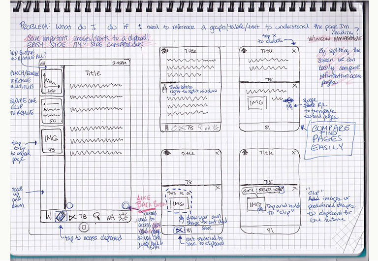
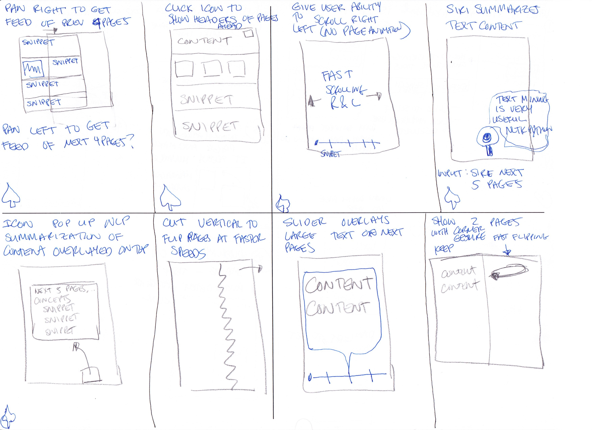

Applications such as iBooks and PDFExpert do a great job with sequential reading and highlighting, but reading on a mobile device (tablet / smartphone) is still subpar compared to reading with a physical book. My goal is to redesign mobile reading applications so you can easily browse, scan, and navigate digital books better than on a physical book!
How do you get an overview of a text? How do you reference and compare materials on other pages without leaving your current page? As an example, many papers and reports refer to graphs and tables on other pages in a PDF file. Without this information, it can be challenging to understand the current text.
Play the video to see my proposed Window Slicing solution for the iPad.
The most common tasks and gestures in reading is
My page comparison design feature requires the user to slice from the leftmost bezel to the right (or vice versa) so we don't interfere with the page swipe. When the user touches the bezel edge, a line starts appearing to provide the user feedback that he can "slice" the window.
My page summarization (in progress) feature has two ways to activate: an icon (that is deeper in the menu system) and 3 finger pinch gesture to enter a page summary mode. Once in the page summary mode, each page contains a summary of the content in the previous/next five pages.
The below image is a wireframe showing the initial window slicing concept.
Have you ever stopped reading a text and then gone back to it a few weeks later realizing that you've forgotten much of the information? Below are sketches of an idea on how to get a quick summary of a text to reducate yourself.
